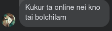

<!DOCTYPE html>
<html>
<head>
<meta name="viewport" content="width=device-width, initial-scale=1.0">
<style type="text/css">
</style>
</head>
	<div id="container">
	<div id="text"></div>
</div>
 <script src="myScript.js"></script>
<script type="text/javascript">

// List of sentences
var _CONTENT = [ "Every love story is beautiful","but ours is my favourite.",
 "Nur You Are My Best Friends!", "Only you can give me that feeling.", "Love in Life ,Make the life beautiful.." ];

// Current sentence being processed
var _PART = 0;

// Character number of the current sentence being processed
var _PART_INDEX = 0;

// Holds the handle returned from setInterval
var _INTERVAL_VAL;

// Element that holds the text
var _ELEMENT = document.querySelector("#text");

// Implements typing effect
function Type() {
	var text =  _CONTENT[_PART].substring(0, _PART_INDEX + 1);
	_ELEMENT.innerHTML = text;
	_PART_INDEX++;

	// If full sentence has been displayed then start to delete the sentence after some time
	if(text === _CONTENT[_PART]) {
		clearInterval(_INTERVAL_VAL);
		setTimeout(function() {
			_INTERVAL_VAL = setInterval(Delete, 50);
		}, 1000);
	}
}

// Implements deleting effect
function Delete() {
	var text =  _CONTENT[_PART].substring(0, _PART_INDEX - 1);
	_ELEMENT.innerHTML = text;
	_PART_INDEX--;

	// If sentence has been deleted then start to display the next sentence
	if(text === '') {
		clearInterval(_INTERVAL_VAL);

		// If last sentence then display the first one, else move to the next
		if(_PART == (_CONTENT.length - 1))
			_PART = 0;
		else
			_PART++;
		_PART_INDEX = 0;

		// Start to display the next sentence after some time
		setTimeout(function() {
			_INTERVAL_VAL = setInterval(Type, 100);
		}, 200);
	}
}

// Start the typing effect on load
_INTERVAL_VAL = setInterval(Type, 100);

</script>
<br>
</html>

<br>
<!DOCTYPE html>
<html>
<head>
<meta name="viewport" content="width=device-width, initial-scale=1">
<link rel="stylesheet" href="styles.css">
</head>
<body>
<h2 class="h2">Amar Golpo Tmi</h2>
 <br>
<p1 class="p1">Name: Nur <br> Address: NaJani Pur <br>Facebook Id: <a href="https://www.facebook.com/profile.php?id=100057607800307">Profile</a><br>
Studay: Dumkal College,Basantapur</p1>
<h1 class="h1">আমি যেন বলি আর তুমি যেন শোন,জীবন জীবনে তার শেষ নেই কোন।</h1>
<br>
<p2 class="f1">মনে নাই শান্তি, হাতে নাই আংটি।
বারে বারে মনে পড়ে তোমার নামটি নূর। প্রেম এক সুখ পাখি, পুষতে হয় বুঝতে খাঁচায়। যদি বলো আমার মনে পড়ে কতবার ?
আমি বলবো চোখের পাপড়ি নড়ে যতবার । যদি বলো আমায় ভালোবাসো কতো ? আমি বলবো ওই আকাশে তাঁরা আছে যত ।
কেন যেন তোমার কথা আজও মনে পরে,ভালোবাসার কাব্য লিখি বন্ধু তোমার চোখে, একবার যদি আসতি ফিরে আমার মনের তীরে,আমার শুন্য মনে বাধিতাম বাসা তোমায় ঘিরে।
চাঁদ তুমি যেমন রাতকে ভালোবাস আমিও ঠিক তেমনি ই করে একজনকে ভালোবাসি তোমার ভালোবাসা যেমন কেউ বুঝে
না ঠিক তেমনই করে, আমার ভালোবাসা বুঝে না।<br>
</p2>
<br>
<p2 class="f2">পৃথিবীর সবচেয়ে দুর্বল স্থান হলো মন আর সবচেয়ে দুর্বল অস্ত্র ভালোবাসা।
যদি কাউকে ধোঁকা দিয়ে থাকো তাহলে ভেবো না সে বোকা। শুধু এটাই ভাববে সে তোমাকে এতটাই বিশ্বাস করেছিল, যার যোগ্য তুমি নও ভালোবাসা জিনিসটা কোনওদিন বেধে রাখতে নেই,খোলা আকাশে ছেড়ে দিতে হয়,
যাতে সে অনেকটা পথ ধরে নিজেকে মেলে ধরতে পারে।<br>
<p2 class="f3">পাগলী আমার ঘুমিয়ে পড়েছে মুঠোফোন তাই শান্ত,
আমি রাত জেগে দিচ্ছি পাহারা মুঠোফোনের এই প্রান্ত,এ কথা যদি সে জানতো।<br>সে জানে না যে একটি ছেলে এবং মেয়ে বন্ধু হতে পারে, কিন্তু তারা অবশ্যই একে অপরের প্রেমে পড়বে।
হয়ত খুবই অল্প সময়ের জন্য, অথবা ভুল সময়ে। কিংবা খুবই দেরিতে, আর না হয় সব সময়ের জন্য।তবে প্রেমে তারা পড়বেই,........,“মনে রাখবেন প্রতিটি মানুষের মাঝে ভাল এবং খারাপ দুইটি দিকই থাকে।
যদি এমন হয় আপনি একটি মানুষে মাঝে কোন খারাপ কিছু খুজে পান না!তাহলে বুঝবেনআপনি তাকে অসম্ভব ভালোবাসেন!
তাই তার খারাপ দিক গুলো আপনার চোখে পড়ে না।” প্রতিটা মেয়ের জীবনেই একজন ছেলে থাকে যাকে
সে মন থেকে কখনোই ভুলতে পারেনা.. আর প্রতিটা ছেলের জীবনেই একজন মেয়ে থাকে যাকে সে মন থেকে চায় কিন্তু কখনোই পায়না।</p2>
<br>
<p2 class="f3"> কাউকে ভালবাসাটা পাগলামি
কারো ভালোবাসা পাওয়াটা উপহার!!যে আপনাকে ভালোবাসে তাকে ভালবাসাটা আপনার দায়িত্ব কিন্তু আপনি যাকে ভালবাসেন তাঁর কাছে ভালোবাসা পাওয়াটা হচ্ছে সৌভাগ্য, একটা প্রাপ্ত বয়স্ক ছেলের সাখে একটা প্রাপ্ত মেয়ের কখনই ভালো বন্ধুত্ব হয় না,
যেটা হয় সেটা হলো প্রেম। কারন একটা সময় আসে যখন ওদের কেউ একজন অপর জনের প্রেমে আসক্ত হয়ে পড়ে যায় কিংবা এরা একে ওপরের প্রেমে পড়ে যায়। তা হতে পারে তাদের ইচ্ছায় কিংবা অনিচ্ছায়। যেমন আমি...,
যে তোমাকে ভালোবাসে তাকে কখনই এড়িয়ে চল না, হয়তো একসময় ঠিকই বুঝবে যে তুমি আকাশে তারা গুনতে গুনতে চাঁদটাকেই হারিয়ে ফেলেছ, আর তখন হাজারো চেষ্টা করে শত পূর্ণিমাতেও চাঁদের দেখা পাবে না। বুঝলে Sonu...,
</p2>
<br>
<p2 class="f4">
  বন্ধুত্ব কখনো হারায় না হারিয়ে যায় সেই মানুষটা যে বন্ধুত্ব মূল্য দিতে পারে না ডিয়ার বেস্টফ্রেন্ড , যদি যাস ভুলে ক্যালাবাে চাঁদা তুলে । তোমার যত সুখ আছে আমায় কিছু দিও,আমার কিছু দুঃখ আছে আপন করে নিও।
  তোমার আকাশ মেঘলা হলে আমায় খবর দিও,বৃষ্টি হয়ে ঝড়বো আমি বন্ধু ভেবে নিও।।রাতের তারা দেখলে পরে বন্ধু তোমায় মনে পরে, হয়তো আমার হৃদয়ের কোনে তুমি আছো আমার মনে,তাই বন্ধু তোমার আসা
তোমায় জানাই আমার ভালোবাসা॥সেই প্রকৃত বন্ধু যে বন্ধুর চোখের প্রথম ফোটা পানি দেখে দ্বিতীয় ফোটা পরার আগে ধরে ফেলে আর ৩য় ফোটা পরার আগে তা হাঁসিতে পরিনত করে,
সবাই আমার বুন্ধু নয়। আবার, আমার বুন্ধু সবার মত নয়। সে আমার কথা মনে রাখে শত কাজের ভিরে। ফ্রী হলে ডাকি ও আমায়, আছি আমি তুমার দুয়ারে। আমি ১টা দিন চাই আলয় আলয় ভরা। আমি ১টা রাত চাই, অন্ধকার ছারা।
আমি ১টা ফুল চাই, সুন্দর সুবাস ভরা। আর ১টা ভাল বন্ধু চাই সবার চেয়ে সেরা…
 </p2>
<br>
<p2 class="f5">
  ফুল গুলি সব ঝরে গেছে, বাগান আজ শুন্য। তোমার স্মৃতি মনে পরলে লাগে যে বিষন্ন। হঠাৎ করে হারিয়ে গেলে অজানা এক দেশে। কেমন করে চলে গেলে হাওয়ার সাথে মিশে..পাখির গানে ঘুম ভাঙে, তোমার ফোনে না। প্রতিক্ষার প্রহর শেষে দেখা হলো না..
  জানিনা কিভাবে তোমার দেখা পাবো, জানিনা কিভাবে তোমাকে কাছে পাবো,জানিনা কতটা আপন ভাব তুমি আমায়। শুধু জানি এই অবুঝ মনটা খুব মিস করে তোমায়। আমি যখন তোমার নাম মাটিতে লিখলাম, বৃষ্টিতে ভিজে গেল..আকাশে লিখলাম, আকাশ মেঘে ঢেকে গেল..
  ঠিক তখনই তুমি আমার ভুলে গেলে..চুপি চুপি বলি তোমায় প্রিয়তমা..আমায় ছেড়ে যেন দূরে যেওনা।
আছো তুমি আমার হৃদয়ের একদম গহীন বনে..,
 </p2>
<br>
<p2 class="f6">
  একটা সময় হারিয়ে যায়,অনেক সময়ের মাঝে। একটা সম্পর্ক হারিয়ে যায়, একটা কথার ভুলে। একটা মন ভেঙ্গে যায়, ছোট্ট অপমানে। একটা জীবন শেষ হয়ে যায়, একটু অভিমানে। ভালোবাসা হচ্ছে এমন যখন কেউ আপনার হৃদয় ভেঙ্গে দেয়… আর সবচেয়ে আবাক বিষয় হচ্ছে
আপনি সেই হৃদয়ের প্রতিটি ভাঙ্গা টুকরো দিয়ে তাকে ভালবাসেন ফুল গুলি সব ঝরে গেছে, বাগান আজ শুন্য। তোমার স্মৃতি মনে পরলে লাগে যে বিষন্ন। হঠাৎ করে হারিয়ে গেলে অজানা এক দেশে। কেমন করে চলে গেলে হাওয়ার সাথে মিশে..পাখির গানে ঘুম ভাঙে, তোমার ফোনে না।
প্রতিক্ষার প্রহর শেষে দেখা হলো না..!!
 </p2>
<br>
<p2 class="f7">
  জানিনা কিভাবে তোমার দেখা পাবো,জানিনা কিভাবে তোমাকে কাছে পাবো,জানিনা কতটা আপন ভাব তুমি আমায়। শুধু জানি এই অবুঝ মনটা খুব মিস করে তোমায়। আমার নিভে যাওয়া প্রদীপ তুমি পারবে কি জ্বালাতে? আমার ভুলে যাওয়া স্বপ্ন পারবে কি দেখাতে? আমার হৃদয়ের গোপন কথা তুমি পারবে কি শুনতে?
  ভেঙে যাওয়া জীবন আমার তুমি পারবে কি গড়তে??আমি পারিনা ছুতেঁ তোমায় আমার একলা লাগে ভারি dear someone,I love u with every bit of my heart kutta. হাজার কথার মাঝে একটা মনের কথা লুকিয়ে থাকে
সব কথা মুখে বলে দেওয়া যায়না হাজার কথার মাঝে ওই একটা কথা বুঝে নিতে হয় পৃথিবীতে অনেক ধরনের অত্যাচার আছে।
ভালবাসার অত্যাচার হচ্ছে সবচেয়ে ভয়ানক অত্যাচার।এ অত্যাচারের বিরুদ্ধে কখনো কিছু বলা যায় না,শুধু সহ্য করে নিতে হয়।”
<br>
ছেলেরা ভালোবাসার অভিনয় করতে করতে যে কখন সত্যি সত্যি ভালোবেসে ফেলে তারা তা নিজেও জানেনা মেয়েরা সত্যিকার ভালোবাসতে বাসতে যে কখন অভিনয় শুরু করে তারা তা নিজেও জানেনা
 </p2>
 <br>
<p2 class="f8">
  আমি যতই বেস্ত থাকি, তোমার কথা মনে রাখি খুলে দেখো দুটি আখি, নীল আকাশে উড়ছে পাখি পাখিরা সব গেয়ে শুনায়, আমি যে মিস করছি তোমায় ।পরাজিত মনটা তোমাকে ভাবতে ভাবতে কখন যেন কোথায় হারিয়ে যায়…যত কষ্ট দাও তোমাকে ভুলতে পারছি না ।।অনেক দিন হয় না কথা বন্ধু তোমার সাথে
ভাবি শুধু তোমার কথা সকাল সন্ধ্যা রাতে মন চায় একটি পলক দেখতে আসি তোমায় তুমি কি গো কখনো মিস করনা আমায় ?ভালোবাসা দেওয়ার জিনিস,নেওয়ার জিনিস নয়। আপনি যদি ভালোবাসা দেওয়ার চেয়ে ভালোবাসা পাওয়াতে বেশি সুখ পান, তাহলে আপনি এখনো ভালোবাসার গভীরে যেতে পারেননি।
গভীর ভালোবেসে যে সুখ পাওয়া যায় তার সাথে প্রায় অন্য কোনো সুখের তুলনা চলেনা!
</p2>
<br>
<p2 class="f9">
  বৃষ্টি আমার হাসি, বৃষ্টি আমার প্রান বৃষ্টি আমার ছোট্ট মনের নীরব অভিমান বৃষ্টি আমার মনের মাঝে রিমঝিম ঝরে তাইতো জান বারে বারে তোমায় মনে পড়ে ।বার বার তোমার চোখের জল মুছে ফেলার চেয়ে জীবন থেকে তাকে মুছে ফেলা উত্তম যে তোমাকে এতবার কাঁদায়।
  টিপ টিপ বৃষ্টিতে অভিমান ঝরছে  ঝুম ঝুম শব্দে কি যেন বলছে  রিমঝিম হৃদয় টা উদাস কেনো হচ্ছে  বৃষ্টি ভেজা মনটা তোমাকেই মিস করছে ।তোমার কথা ভেবে ভেবে আমি পাগল হই এই হৃদয়ের এত কথা কার কাছেতে কই তোমাকে না দেখলে আমার ভালো তো লাগেনা
এই মন টা শুধু ছুটে যে যায় ঘরেতে থাকেনা..,আমায় ছেড়ে অনেক দূরে গেলে তুমি চলে যেথায় থাকো ভালো থেকো, যেওনা আমায় ভুলে মনে পড়লে আমার কথা আকাশে চিঠি লেখো যত্ন করে সময় মতো নিজের খেয়াল তুমি রেখো
</p>
<br>
<p2 class="f10">
  ইচ্ছে হলে মনে রেখো  ভুলে যেও না মনে পড়লে কথা বলো অভিমান করো না ভুল হলে ক্ষমা করো রাগ করোনা দুঃখ পেলে জানিয়ে দিও লুকিয়ে রেখোনা বাসবো ভালো তোমায় আমি
মনের মত করে রাখবো তোমায় বুকের মাঝে অনেক আদর করে তুমি হবে চোখের মনি আমার মুখের ভাষা তোমায় নিয়ে হাজার স্বপ্ন হাজার ভালোবাসা…!
</p>


<!--Page Footer----------->
<br>
<footer class="footer">
    <p>Author: Anis Chowdry<br>
    <a href="#">&copy; 2022 Developer World</a></p>
  </footer>
</body>
</html>
